洗練された電子プリント回路基板の開発を成功に導く、KiCadをマスターするための必須で簡潔なガイド
著作権
このドキュメントは以下の貢献者により著作権所有 © 2010-2015 されています。あなたは、GNU General Public License ( http://www.gnu.org/licenses/gpl.html ) のバージョン 3 以降、あるいはクリエイティブ・コモンズ・ライセンス ( http://creativecommons.org/licenses/by/3.0/ ) のバージョン 3.0 以降のいずれかの条件の下で、配布または変更することができます。
このガイドの中のすべての商標は、正当な所有者に帰属します。
*貢献者*
David Jahshan, Phil Hutchinson, Fabrizio Tappero, Christina Jarron, Melroy van den Berg.
翻訳
kinichiro <kinichiro.inoguchi AT gmail.com>, 2015. silvermoon <silvermoon AT kicad.jp>, 2011-2015. yoneken <yoneken AT kicad.jp>, 2011-2015.
フィードバック
バグ報告や提案はこちらへお知らせください:
-
KiCad のドキュメントについて : https://github.com/KiCad/kicad-doc/issues
-
KiCad ソフトウェアについて : https://bugs.launchpad.net/kicad
-
KiCad ソフトウェアの国際化について : https://github.com/KiCad/kicad-i18n/issues
発行日
2015年5月16日
1. KiCadのご紹介
KiCadは、電子回路図とPCBレイアウトを作成するためのオープンソースのソフトウェア・ツールです。その一つの外観の下に、KiCadは、以下の独立したソフトウェア・ツール群のすばらしい組み合わせを実現しています:
| プログラム名 | 説明 | 拡張子 |
|---|---|---|
KiCad |
プロジェクト・マネージャ |
*.pro |
Eeschema |
回路図エディタ (回路図とコンポーネント) |
*.sch, *.lib, *.net |
CvPcb |
フットプリント・セレクタ |
*.net |
Pcbnew |
PCBレイアウト |
*.kicad_pcb |
GerbView |
ガーバー・ビューア |
全ての通常のガーバー |
Bitmap2Component |
ビットマップをコンポーネントやフットプリントに変換 |
*.lib, *.kicad_mod, *.kicad_wks |
PCB Calculator |
コンポーネント、線幅、電気的安全間隔、カラーコード等のための計算機 |
なし |
Pl Editor |
図枠エディタ |
*.kicad_wks |
|
注
|
拡張子の一覧は完全ではなく、KiCadが連携するファイルの一部のみを含んでおり、どのファイルがどのKiCad固有のアプリケーションで使われるのかの基本的な理解に役立ちます。 |
KiCadは、複雑な電子基板の開発やメンテナンスに十分使えるほどに成熟していると考えることができます。
KiCadには基板サイズの制限がなく、最大32の導体レイヤ、最大14のテクニカルレイヤそして最大4の補助レイヤを容易に扱えます。KiCadは、ガーバー・ファイル、ドリル・ファイル、コンポーネント・ロケーション・ファイル等のプリント基板作成に必要な全てのファイルを作ることができます。
オープンソース(GPLライセンスに基づく)であるため、KiCadは、オープンソース志向の電子機器作成プロジェクトに理想的なツールです。
インターネット上のKiCadのホームページ:
1.1. KiCadのダウンロードとインストール
KiCad は GNU/Linux、Apple OS X、Windows で動作します。以下の URL で最新のインストール手順とダウンロードのリンクが見つかります:
|
重要
|
KiCad 安定版は KiCad Stable Release Policy に基づいて定期的にリリースされます。新機能は継続的に開発ブランチに追加されています。もしあなたが新機能を活用したりテストをするなら、あなたのプラットホームの最新の夜間ビルドをダウンロードしてください。夜間ビルドにはバグがあるかもしれませんが、KiCad 開発チームは新機能の開発中も開発ブランチを可能な限り使用可能にしておくことを目標にしています。 |
1.2. GNU/Linuxの場合
KiCad の安定版はほとんどのディストリビューション・パッケージ・マネージャで kicad と kicad-doc として見つけることができます。もしあなたがお使いのディストリビューションが最新の安定版を提供してなければ、不安定版の指示に従って、最新の安定版を選択してインストールしてください。
不安定版は最新のソースコードからビルドされます。不安定版は、ファイルを壊したり、悪いガーバーを生成したり等のバグがあることもありますが、一般的には安定しており、そして最新の機能を持っています。
Ubuntu の場合、KiCad の不安定版の夜間ビルドをインストールする最も簡単な方法は PPA と Aptitude によるものです。端末で次のようにタイプします:
sudo add-apt-repository ppa:js-reynaud/ppa-kicad
sudo aptitude update && sudo aptitude safe-upgrade
sudo aptitude install kicad kicad-doc-en
Fedora の場合、KiCad の不安定版の夜間ビルドをインストールする最も簡単な方法は copr によるものです。KiCad を copr でインストールするには端末で次のようにタイプします:
sudo dnf copr enable mangelajo/kicad
sudo dnf install kicad
あるいは、コンパイル済みバージョンのKiCadをダウンロードしてインストールしたり、直接KiCadのソースコードをダウンロードしてコンパイルしてインストールすることもできます。
1.3. Apple OS Xの場合
OS X 用の安定版の KiCad は以下の URL で見つけられます:
http://downloads.kicad-pcb.org/osx/stable/
不安定版は最新のソースコードからビルドされます。不安定版は、ファイルを壊したり、悪いガーバーを生成したり等のバグがあることもありますが、一般的には安定しており、そして最新の機能を持っています。
不安定版の夜間ビルドは以下の URL で見つけられます:
http://downloads.kicad-pcb.org/osx/
1.4. Windowsの場合
Windows 用の安定版の KiCad は以下の URL で見つけられます:
http://downloads.kicad-pcb.org/windows/stable/
不安定版は最新のソースコードからビルドされます。不安定版は、ファイルを壊したり、悪いガーバーを生成したり等のバグがあることもありますが、一般的には安定しており、そして最新の機能を持っています。
Windows 用の夜間ビルドは以下の URL で見つけられます:
http://downloads.kicad-pcb.org/windows/
1.5. サポート
何か思いついたり、発言したいことがあったり、質問があったり、ヘルプが必要だったり … いずれの場合でも:
-
訪れてみましょう。 Forum
-
参加してみましょう。 #kicad IRC channel on Freenode
-
熟読してみましょう。 Tutorials
2. KiCad 作業の流れ
他のPCBソフトウェア・ツールとの類似性にもかかわらず、KiCadは、回路図のコンポーネントとフットプリントを実際には別々の2つの実体とする、面白い作業の流れを特徴としています。このことはよくインターネットのフォーラムでの議論の対象となります。
2.1. KiCad 作業フローチャート
KiCadの作業の流れは２つの主要なタスクで構成されています。それは回路図の作成と基板への配置です。これら2つのタスクのためにコンポーネントのライブラリとフットプリントのライブラリの両方が必要とされます。KiCadはその両方の多くを持っています。それでは不十分な場合、KiCadは、新しいそれらを作るのに必要なツールも持っています。
下の図はKiCadの作業の流れを示すフローチャートです。この図はあなたが取る必要のあるステップを、どんな順序で行うのかを説明しています。適用できる場合には便宜上アイコンを付け加えています。
コンポーネントの作成についての更なる情報は、この文書の 「KiCad回路図コンポーネントの作成」 の章を参照して下さい。また、どのように新しいフットプリントを作成するかについての更なる情報は、この文書の 「フットプリントの作成」 の章を参照して下さい。
以下のサイト:
では、素早くKiCadのコンポーネントを作成することのできるツールの例を見つけることができるでしょう。quicklib についての更なる情報は、この文書の 「quicklibによる回路図コンポーネントの作成」 の章を参照して下さい。
2.2. 前方向と後方向のアノテーション
電子回路図を完全に描き終わったら、次のステップはKiCadの作業の流れに従い、それをPCBに移すことです。基板レイアウトの工程を部分的にあるいは完全に終え、追加のコンポーネントやネットが付け足される必要があるかもしれませんし、部品達を並び替えたり、色々あるでしょう。これは2つの方法で行うことができます: 後方向アノテーションと前方向アノテーション。
後方向アノテーションは、PCBレイアウトの変更をその対応する回路図に送り戻す処理です。この特別な機能を特に便利と思わない人もいるでしょう。
前方向アノテーションは回路図の変更を対応するPCBレイアウトに送る機能です。回路図に変更を加える度にPCBのレイアウト全体をやり直したくはないでしょうからこれは基本的な機能です。前方向アノテーションは 「KiCadの前方向アノテーション」 の章で議論されています。
3. 電子回路図の描画
この章ではKiCadを使ってどのように電子回路図を描画するかを学びます。
3.1. Eeschema の使用
-
Windowsの場合、kicad.exeを実行して下さい。Linuxの場合、端末で kicad とタイプして下さい。KiCad プロジェクト・マネージャのメイン画面が現れるでしょう。ここからあなたは次の8つの独立したソフトウェア・ツールを使うことができます: Eeschema, コンポーネント・ライブラリ・エディタ, Pcbnew, フットプリント・エディタ, GerbView, Bitmap2Component, PCB Calulator そして Pl Editor です。主要なツール群がどのように使われるのか理解するために KiCad作業の流れ の図を参照して下さい。
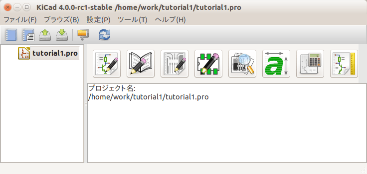 -
新規プロジェクトを作成します: ファイル → 新規プロジェクト → 新規プロジェクト 。プロジェクトファイルは tutorial1 と名付けましょう。プロジェクトファイルの拡張子は自動的に ".pro" となります。KiCad はこのプロジェクト専用のディレクトリを作るかを確認してくるので、 "はい" をクリックしましょう。あなたのプロジェクトファイルは全てここに保存されます。
-
回路図の作成から始めてみましょう。回路図エディタ Eeschema を起動します 。左から1番目のボタンです。
-
トップツールバーの ページの設定 アイコン
 をクリックします。ページサイズを A4 に選択し、タイトルを Tutorial 1
と入力します。必要に応じて更に多くの情報をここで入力できることが分かるでしょう。OKをクリックします。この情報は回路図面の右下隅に取り込まれます。ズームインするにはマウスのホイールを使います。回路図プロジェクトを保存しましょう:
ファイル → 回路図プロジェクトの保存
をクリックします。ページサイズを A4 に選択し、タイトルを Tutorial 1
と入力します。必要に応じて更に多くの情報をここで入力できることが分かるでしょう。OKをクリックします。この情報は回路図面の右下隅に取り込まれます。ズームインするにはマウスのホイールを使います。回路図プロジェクトを保存しましょう:
ファイル → 回路図プロジェクトの保存
-
では最初のコンポーネントを置いてみます。右ツールバーの コンポーネントの配置 アイコン
 をクリックします。同じ機能はショートカットの "a" キーによる コンポーネントの配置 によっても行えます。
注
をクリックします。同じ機能はショートカットの "a" キーによる コンポーネントの配置 によっても行えます。
注"?" を押すと利用できるショートカットキーの一覧を見ることができます。 -
回路図シートの中央あたりをクリックします。 コンポーネントの選択 ウィンドウが表示されます。抵抗器を配置してみましょう。フィルタに抵抗器(Resitor)の R を入力して探します。抵抗器の上に device と見出しが出ることに気付いたと思います。この device という見出しは、そのコンポーネントが存在するライブラリの名前で、それはとても汎用的で便利なライブラリです。
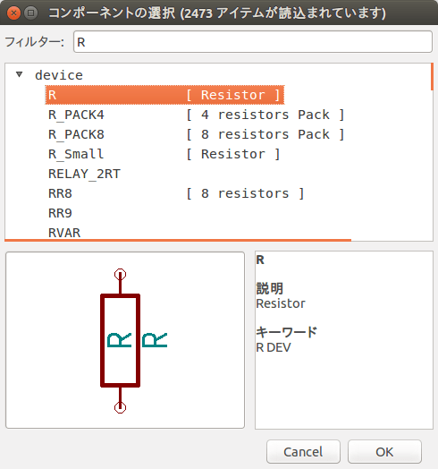 -
その上でダブルクリックします。これにより コンポーネントの選択 ウィンドウが閉じられます。回路図シート上の置きたいと思う所をクリックすることでコンポーネントを配置します。
-
ズームインするためにコンポーネント上で拡大鏡をクリックします。あるいは、ズームインとズームアウトをするためにマウスのホイールを使います。水平方向と垂直方向にパンするにはマウスの（中央）ホイールを押します。
-
コンポーネント R の上にマウスカーソルを合わせて、"r" キーを押します。コンポーネントが回転します。回転させるためにコンポーネント上でクリックする必要はありません。
注マウスカーソルが フィールド Reference (R) か フィールド Value (R?) の上にあればメニューが現れるでしょう。この 明示的な選択 メニューはしばしば KiCad で見られ、互いに重なっているオブジェクトへの作業を可能にします。今回の場合、 コンポーネント R にアクションを実行することを KiCad に伝えます。 -
コンポーネントの中央で右クリックし、コンポーネントの編集 → 定数 を選択します。コンポーネントの上にマウスカーソルを合わせて "v" キーを押しても同じことができます。あるいは、"e" キーで更に全般的な編集ウィンドウを開けます。以下の右クリックのコンテキストメニューが、全ての可能なアクションに対する全ての利用可能なショートカットキーを見せてくれることに注目しましょう。
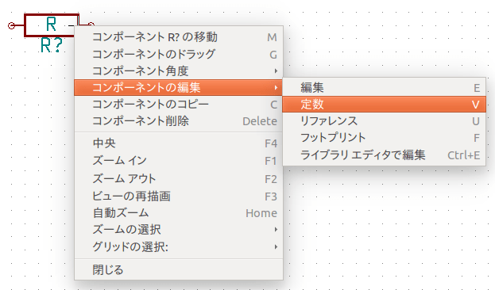 -
フィールド定数の編集のウィンドウが表示されます。現在の定数の R を 1k に置き換えます。OKをクリックします。
注リファレンス・フィールド (R?) を変更しないで下さい。これは後ほど自動的に行われます。これで抵抗器の中の定数は 1k となりました。 
-
別の抵抗器を配置するには、抵抗器を置きたい場所を単にクリックします。コンポーネント選択のウィンドウが再び表示されます。
-
前に選んだ抵抗器が履歴リスト上に R として表示されています。OKをクリックしてコンポーネントを配置します。
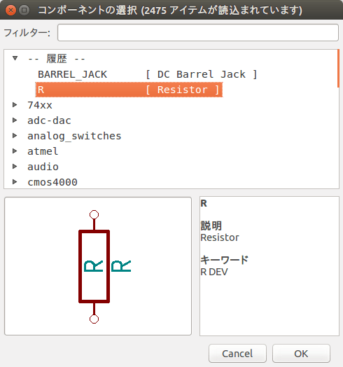 -
間違えたコンポーネントを削除したい場合は、コンポーネント上で右クリックして コンポーネント削除 をクリックします。これでコンポーネントは回路図から取り除かれます。あるいは、削除したいコンポーネント上にマウスカーソルを置いて "Delete" キーを押すこともできます。
注デフォルトのショートカットキーは 設定 → ホットキー → ホットキーの編集 で編集できます。変更は即座に保存されます。 -
既に回路図シート上にあるコンポーネントにマウスカーソルを合わせて "c" キーを押すことにより、複製することができます。新しく複製したコンポーネントを置きたい場所をクリックして下さい。
-
2つ目の抵抗器を右クリックします。コンポーネントの移動 を選択します。コンポーネントを再配置して左クリックで置きます。同じ機能が、コンポーネントにマウスカーソルを合わせて "g" キーを押すことでも可能です。回転させるためには "r" キーを使います。"x" キーと "y" キーはコンポーネントを反転させます。
注右クリック → コンポーネントの移動 ("m" キーと同等) もまた色んなものを移動する便利なオプションですが、 コンポーネントのラベルや未接続のコンポーネントにのみ使うのが良いです。 なぜそうなのかは後述します。 -
2つ目の抵抗器にマウスカーソルを置いて "v" キーを押して編集します。R を 100 で置き換えます。"Ctrl+Z" キーによってどんな編集操作も「元に戻す」ができます。
-
グリッドのサイズを変更します。回路図シート上では、全てのコンポーネントが大きなマス目のグリッドに沿っていることに気付いていると思います。グリッドのサイズは 右クリック → グリッドの選択 で変更することができます。 一般的に、回路図シートでは50.0ミルのグリッドをお勧めします。
-
デフォルトのプロジェクトでは設定されていないライブラリに含まれているコンポーネントを追加します。メニューで 設定 → コンポーネント ライブラリ を選んで コンポーネント ライブラリ ファイル の右にある 追加 ボタンをクリックします。
-
公式の KiCad ライブラリがあなたのコンピュータのどこにインストールされているか見つける必要があります。たくさんの .dcm ファイルと .lib ファイルのある library ディレクトリを探しましょう。 C:\Program Files (x86)\KiCad\share\ (Windows) や /usr/share/kicad/library/ (Linux) を見てみましょう。ディレクトリを見つけたら、 microchip_pic12mcu ライブラリを選んで追加し、コンポーネントライブラリのダイアログを閉じましょう。
-
コンポーネント追加のステップを続けますが、今度は device ライブラリの代わりに microchip_pic12mcu ライブラリを選択して PIC12C508A-I/SN コンポーネントを選びましょう。
-
マイクロコントローラのコンポーネントにマウスカーソルを置きます。"y" キーか "x" キーを押します。コンポーネントがx軸、y軸でどのように反転するかが分かります。キーをもう一度押すと元の方向に戻ります。
-
コンポーネント追加のステップを続けますが、今度は device ライブラリを選択して LED コンポーネントを選びましょう。
-
回路図シート上の全てのコンポーネントを以下のように整理します。

-
私達は3ピンのコネクタのために MYCONN3 という回路図コンポーネントを作る必要があります。 「KiCad回路図コンポーネントの作成」 の章にジャンプし、一からコンポーネントを作る方法を学び、この章に戻ってきて下さい。
-
さあ、新たに作成されたコンポーネントを配置することができるようになりました。"a" キーを押して List All を選択します。myLib ライブラリを選択して MYCONN3 コンポーネントを選びます。
-
コンポーネントの識別子 J? が MYCONN3 ラベルの下に見えます。位置を変えたいなら、J? の上で右クリックして リファレンスの移動 ("m" キーと同等) をクリックします。これを行う前か最中にズームインすると便利かもしれません。コンポーネントの J? を以下に示すように再配置します。ラベルは何回でも好きなだけ動かすことができます。
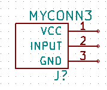 -
電源とGNDのシンボルを配置します。右ツールバーにある 電源ポートの配置 ボタン
 をクリックします。あるいは、"p"
キーを押します。コンポーネント選択のウィンドウで下方にスクロールし、 power ライブラリから VCC 選択します。OKをクリックします。
をクリックします。あるいは、"p"
キーを押します。コンポーネント選択のウィンドウで下方にスクロールし、 power ライブラリから VCC 選択します。OKをクリックします。
-
VCC部品を配置するために、1kの抵抗器のピンの上方をクリックします。マイクロコントローラ の VDD の上方をクリックします。 コンポーネント選択履歴 の中から VCC を選び、VDDピンの隣に配置します。追加作業を繰り返して、VCC部品を MYCONN3 のVCCピンの上方に配置します。
-
ピン追加のステップを続けますが、今度はGND部品を選択します。GND部品を MYCONN3 のGNDピンの下に配置します。別のGNDシンボルを、マイクロコントローラのVSSピンの右に配置します。回路図はこのようになっているはずです。

-
次に、全てのコンポーネントの配線をします。右ツールバーの ワイヤの配置 アイコン をクリックします。
注バスの配置 を選ばないように注意しましょう。このボタンの直ぐ下にあり線が太いです。 「KiCadでのバス接続」 の節でバスをどのように使うか説明しています。 -
マイクロコントローラのピン7の端の小丸をクリックし、それからLEDのピン1の小丸をクリックします。接続を配置する時にズームインすることができます。
注配線されたコンポーネントを再配置したい場合、"g" キー (掴む) を使うことが重要で、"m" キー (移動) は使うべきではありません。(掴む) を使うことでワイヤの接続を維持できます。コンポーネントの移動方法を忘れたならステップ16,27を見直しましょう。 
-
この処理を繰り返して以下の全てのコンポーネントの配線を済ませます。ワイヤを終端するにはダブルクリックをします。VCCとGNDのシンボルへの配線は、VCCシンボルなら下部に、GNDシンボルなら上部中央にタッチします。下のスクリーンショットを見てください。

-
今度はラベルを使った別の接続方法を考えてみましょう。右ツールバーの ネット名の配置 アイコン
 をクリックして ネット名の配置ツールを選びます。"l"
キーを使うこともできます。
をクリックして ネット名の配置ツールを選びます。"l"
キーを使うこともできます。
-
マイクロコントローラのピン6に接続されているワイヤの中程をクリックします。このラベルに INPUT と名前をつけます。
-
同じ手順に従い100Ωの抵抗器の右にある配線に別のラベルを配置します。同様に INPUT と名前を付けます。2つの同じ名前を持つラベルは、見えない接続をPICのピン6と100Ω抵抗器の間に作ります。これは線が混雑した複雑なデザインの場合に便利な配線テクニックです。ラベルを配置するのに必ずしもワイヤは必要ではなく、単純にピンにラベルを付けることができます。
-
ラベルはまた、単に配線に有用な名前をつける目的で使うこともできます。PICのピン7にラベルを付けて uCtoLED と名前をつけたり、抵抗器とLEDの間のワイヤに LEDtoR と名前をつけたり、MYCONN3 と抵抗器の間のワイヤに INPUTtoR つけたり、です。
-
VCCとGNDの線にラベルをつける必要はありません。そのラベルは、接続されている電源オブジェクトから暗黙的に定義されています。
-
下図に最終的な結果がどのように見えるかを示します。
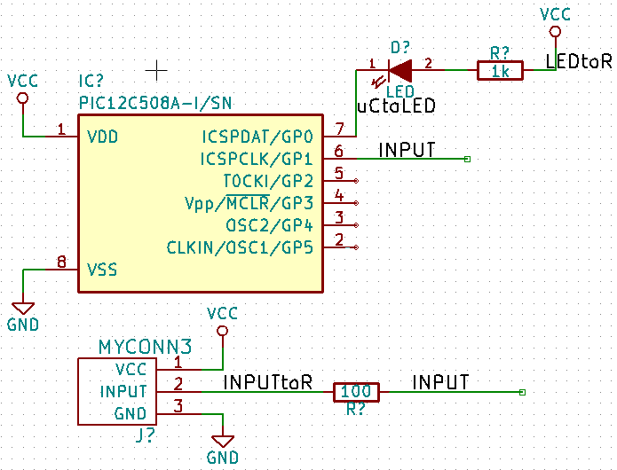 -
それでは接続されていないワイヤに対処しましょう。接続されていないピンやワイヤはKiCadにチェックされた時に警告されます。これらの警告を避けるため、ワイヤが接続されていないのが意図的であることをプログラムに指示することができます。
-
右ツールバーにある 空き端子フラグを配置 というアイコン をクリックします。2, 3, 4 と 5 の線の端にある小丸の上でクリックします。 Xは未接続が意図的であることを示すために表示されます。

-
見えない電源ピンを持つコンポーネントがあります。左ツールバーの 非表示ピンを表示 のアイコン をクリックすることでそれらを見えるようにできます。VCCとGNDの名前付けが尊重される場合、隠れた電源ピンは自動的に接続されます。一般的には、隠れた電源ピンを作らないように努力すべきです。
-
KiCadに、どこから電源が来るのかを示すために、電源フラグ を追加する必要があります。"a" キーを押して List All を選択し、power ライブラリの上でダブルクリックを行い、PWR_FLAG を探します。それを２つ配置します。以下に示すようにGNDとVCCに接続しましょう。
 注
注これにより典型的な回路図チェックの警告を避けることができます: 警告 power_in ピンは駆動されていません (Net xx) -
あちこちにコメントを書いておくのが良いこともあります。回路図にコメントを追加するには、右ツールバーの テキストの配置 のアイコン
 を使います。
を使います。
-
全てのコンポーネントは今ユニークな識別子を持つ必要があります。実際には私達のコンポーネントの多くはまだ R? や J? と名付けられています。識別子の割り当ては、トップツールバーの 回路図のアノテーション のアイコン
 をクリックすることで自動的に行われます。
をクリックすることで自動的に行われます。
-
回路図のアノテーション ウィンドウでは、 全ての回路図、階層を使用 を選択し、アノテーション ボタンをクリックします。確認のメッセージにOKをクリックし、閉じる をクリックします。コンポーネントの全ての ? が数字に置き換えられたことがわかります。各識別子はユニークです。私達の例では、 R1 、 R2 、 U1 、 D1 そして J1 と名付けられました。
-
ここで回路図のエラーをチェックします。トップツールバーの エレクトリカル ルール チェックの実行 アイコン
 をクリックします。実行
ボタンをクリックします。接続されていないワイヤ等のエラーや警告のレポートが通知されます。エラー０、警告０にしましょう。エラーや警告がある場合には、小さな緑色の矢印が回路図上のエラーや警告のある場所に表示されます
。よりエラーの情報を得るため ERCレポートファイルの生成 をチェックし、実行 ボタンを再度押します。
注
をクリックします。実行
ボタンをクリックします。接続されていないワイヤ等のエラーや警告のレポートが通知されます。エラー０、警告０にしましょう。エラーや警告がある場合には、小さな緑色の矢印が回路図上のエラーや警告のある場所に表示されます
。よりエラーの情報を得るため ERCレポートファイルの生成 をチェックし、実行 ボタンを再度押します。
注もしも "デフォルトのエディタが指定されていません。エディタを指定して下さい。" のワーニングが出たなら、 C:\Windows\notepad.exe (Windows) か /usr/bin/gedit (Linux) を設定してみてください。 -
回路図は完成しました。これでコンポーネントに対応するフットプリントを付け足す、ネットリストのファイルを作成することができるようになりました。トップツールバーにある ネットリストの生成 のアイコン をクリックします。生成 をクリックし、デフォルトのファイル名で 保存 をクリックします。
-
ネットリストを生成したら、トップツールバーにある CvPcb(コンポーネントとフットプリントの関連付け)を実行 のアイコン
 をクリックします。ファイルが存在しませんのエラーが表示されたらOKをクリックします。
をクリックします。ファイルが存在しませんのエラーが表示されたらOKをクリックします。
-
CvPcb により、回路図の全てのコンポーネントに、KiCadライブラリ内のフットプリントをリンクすることができます。左側のペインは回路図で使われている全てのコンポーネントを表示しています。まず D1 を選択します。右側のペインは全ての利用可能なフットプリントを表示しています。ここでは LEDs:LED-5MM までスクロールダウンして、それをダブルクリックします。
-
右側のペインに、利用可能なフットプリントの内、選択されたサブグループだけを表示することもできます。これはKiCadが適切なフットプリントだけをあなたに提示しようとするためです。このフィルタを有効/無効するにはこれらのアイコン


 をクリックします。
をクリックします。
-
IC1 にはフットプリント Housings_DIP:DIP-8_W7.62mm を選択します。 J1 にはフットプリント Connect:Banana_Jack_3Pin を選択します。 R1 と R2 にはフットプリント Discret:R1 footprint を選択します。
-
選択したフットプリントがどんな風に見えるのかを知りたいなら2つの選択肢があります。現在のフットプリントのプレビューには 選択したフットプリントを見る のアイコン
 をクリックします。あるいは フットプリントのドキュメントを表示 のアイコン
をクリックします。あるいは フットプリントのドキュメントを表示 のアイコン
 をクリックすると、全ての利用可能なフットプリントのPDF文書が得られます。印刷して部品の寸法が適合することを確認できます。
をクリックすると、全ての利用可能なフットプリントのPDF文書が得られます。印刷して部品の寸法が適合することを確認できます。
-
割り当てができました。これで全ての関連付けたフットプリントでもってネットリストのファイルを更新することができます。 ファイル → 編集を保存 をクリックします。デフォルトの tutorial1.net のままで保存をクリックします。あるいはアイコン
 も使えます。これでネットリストのファイルは全てフットプリントで更新されました。フットプリントのない部品がある場合、独自にフットプリントを作る必要があることに注意して下さい。このことについてはこの文書の後の章で説明されます。
も使えます。これでネットリストのファイルは全てフットプリントで更新されました。フットプリントのない部品がある場合、独自にフットプリントを作る必要があることに注意して下さい。このことについてはこの文書の後の章で説明されます。
-
CvPcb を閉じて Eeschema 回路図エディタに戻ります。 ファイル → 回路図プロジェクトの保存 をクリックしてプロジェクトを保存します。 Eeschema を閉じます。
-
KiCadプロジェクト・マネージャに切り替えます。
-
ネットリストには、全てのコンポーネントとそのそれぞれのピン接続が記述されています。ネットリストはテキストファイルなので、容易に検査したり編集したり書いたりすることができます。
注ライブラリファイル (*.lib) もテキストファイルなので、同様に容易に編集したり記述することができます。 -
部品表 (BOM) を作成するには Eeschema 回路図エディタを起動してトップツールバーにある 部品表の生成 のアイコン をクリックします。デフォルトではプラグインは全て無効になっています。 *プラグインの追加* ボタンをクリックすることで追加することができます。使いたい *.xsl ファイルを選択します。この場合は bom2csv.xsl を選択します。
注*.xsl ファイルは、KiCadをインストールしたディレクトリの plugins にあり、それは次の場所に位置します: /usr/lib/kicad/plugins/
または次のようにしてファイルを入手します:
wget https://raw.githubusercontent.com/KiCad/kicad-source-mirror/master/eeschema/plugins/bom2csv.xsl
KiCadは自動的にコマンドを生成します、例えばこのように:xsltproc -o "%O" "/home/<user>/kicad/eeschema/plugins/bom2csv.xsl" "%I"
拡張子を与えたい場合、このコマンドラインを変更します:xsltproc -o "%O.csv" "/home/<user>/kicad/eeschema/plugins/bom2csv.xsl" "%I"
ヘルプボタンを押すことで更に情報が得られます。
-
さあ 生成 を押してみましょう。ファイル(プロジェクトと同じ名前です)はプロジェクトフォルダの中にあります。*.csv ファイルを LibreOffice Calc か Excel で開いてみましょう。インポートのウィンドウが表示されたらOKを押します。
あなたはこれで次の章のPCBレイアウトのパートに進む準備ができました。ですが先に進む前に、コンポーネントのピンをバスで接続する方法をさっと見ておきましょう。
3.2. KiCadでのバス接続
コンポーネントAの連続したピンと、別のコンポーネントBの連続したピンを接続しなければならないことがあります。この場合2つの選択肢があります: 私達が既に見てきたラベルによる方法とバス接続です。どうするのか見てみましょう。
-
4ピンのコネクタが3つあり、ピン同士を接続したいのだと仮定しましょう。ラベルを使って ("l" キーを押す) コネクタP4のピン4に a1 という名前のラベルを付けます。Ins キーを押して、ピン4の下のピン3に自動的に同様の処理を行います。ラベルは自動的に a2 とリネームされます。
-
"Insert" キーを更に2回押してください。"Insert" キーは Repeat last item 機能に対応しており、あなたの仕事を楽にしてくれるとても便利なコマンドです。
-
ラベル付け作業を他の2つのコネクタ CONN_2 と CONN_3 にも繰り返して終えました。このまま進めてPCBを作成すると、3つのコネクタがお互い接続されていることでしょう。図2に説明したことが表されています。美しく見せるために、図3に示すよう、アイコン
 を使った一連の
ワイヤ-バスエントリを配置 と、アイコン
を使った一連の
ワイヤ-バスエントリを配置 と、アイコン
 を使ったバスラインを付け加えることも可能です。PCBにはなんの影響もありませんが。
を使ったバスラインを付け加えることも可能です。PCBにはなんの影響もありませんが。
-
図2の、ピンに接触している短いワイヤは厳密には不要であることを指摘しておきます。実際、ラベルはピンに直接付けることができるのでした。
-
もう一歩進んで、4つ目のコネクタ CONN_4 を仮定します。何らかの理由により、そのラベル付けは少し異なっています(b1, b2, b3, b4)。私達は Bus a と Bus b をピンとピンの方法で接続したいのです。ピンにラベル付けする方法(も可能ですが)は使わずに、代わりに、バス毎に1ラベルで、バスラインにラベル付けする方法で実現したいわけです。
-
前に説明したラベル付けの方法を使って、CONN_4に接続してラベルを付けます。ピンには b1, b2, b3 そして b4 と名前を付けます。アイコン
を使った一連の
ワイヤ-バスエントリを配置 と、アイコン
 を使ったバスラインに、ピンを接続します。図4を見て下さい。
を使ったバスラインに、ピンを接続します。図4を見て下さい。
-
CONN_4のバスにラベルを付けて("l" キーを押して) b[1..4] と名付けます。
-
以前のバスにラベルを付けて("l" キーを押して) a[1..4] と名付けます。
-
これでボタン
を使って、バスa[1..4]とバスb[1..4]を接続することでできるようになりました。
-
2つのバスを接続することで、ピンa1は自動的にピンb1に接続され、a2はb2に接続され、以下同様となります。図4は最終結果がどのように見えるか示しています。
注"Insert" キーによる Repeat last item 機能は、繰り返される周期的な作業にうまく使うことができます。例えば、短いワイヤを全てのピンに接続する図2、図3、図4 での作業はこの機能でできました。 -
"Insert" キーによる Repeat last item 機能は、アイコン
を使っての、たくさんの連続した
ワイヤ-バスエントリを配置 にも適用できます。

4. プリント基板のレイアウト
生成したネットリストのファイルを使ってPCBのレイアウトを行う時が来ました。これは Pcbnew ツールで行います。
4.1. Pcbnew の使用
-
KiCadプロジェクト・マネージャから Pcbnew のアイコン
 をクリックします。 Pcbnew ウィンドウが開きます。 「ボード *.kicad_pcb
は存在しません。新規作成しますか？」というエラーメッセージが出たら はい をクリックします。
をクリックします。 Pcbnew ウィンドウが開きます。 「ボード *.kicad_pcb
は存在しません。新規作成しますか？」というエラーメッセージが出たら はい をクリックします。
-
いくつか回路図情報を入力することから始めます。トップツールバーの ページ設定 のアイコン
をクリックします。ページサイズ を A4
に設定して、 タイトル を Tutorial 1 と設定します。
-
PCBメーカーが要求する クリアランス と 最少配線幅* に設定することから始めるのは良い考えです。一般的にクリアランスを 0.25 に、最少配線幅を 0.25 に設定します。メニューの *デザインルール → デザインルール をクリックします。もしまだ表示されていなければ ネットクラスエディタ のタブをクリックします。以下に示すように、ウィンドウの上部にある クリアランス のフィールドを 0.25 に、 配線幅' のフィールドを '0.25 に変更します。ここでの寸法は mm です。
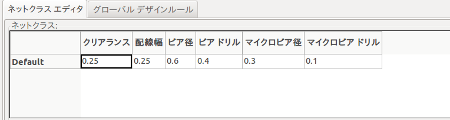 -
グローバルデザインルール タブ上でクリックし、 最小の配線幅' を '0.25 に設定します。変更を確定するためOKボタンをクリックし、デザインルールエディタのウィンドウを閉じます。
-
さあネットリストのファイルをインポートしましょう。トップツールバーにある ネットリストの読込み アイコン をクリックします。ネットリストファイルを参照する ボタンをクリックし、選択ダイアログの中で tutorial1.net を選択し、 現在のネットリストを読み込む をクリックします。その後、閉じる ボタンをクリックします。
-
全てのコンポーネントはページ上の左上隅に表示されるはずです。見えない場合にはスクロールアップしましょう。
-
マウスで全てのコンポーネントを選択して基板の中央に移動します。必要であれば、コンポーネントの移動中にズームインやズームアウトすることができます。
-
全てのコンポーネントは ラッツネスト と呼ばれる細いワイヤで接続されています。ボードのラッツネストを非表示 のボタン
 が押されていることを確認します。 これでラッツネストが全てのコンポーネントをつないでいるのが見えます。
注
が押されていることを確認します。 これでラッツネストが全てのコンポーネントをつないでいるのが見えます。
注ツールチップは逆を示します; このボタンを押すことでラッツネストを表示します。 -
コンポーネントにマウスカーソルを置いて "g" キーを押すことで移動することができます。配置したい所でクリックします。配線の交差数が最少になるまで全てのコンポーネントを移動します。
注コンポーネントを掴む("g" キーで)代わりに "m" キーを使って移動すると接続が失われることに注意しましょう(同じことが Eeschema でもおきます)。要するに、いつでも "g" キーを使いましょう。 
-
ラッツネストが消えたり画面が乱れてきた場合には、右クリックして ビューの再描画 をクリックします。どのように100Ωの抵抗器のピンがPICコンポーネントのピン6に接続されているかに注意しましょう。これがピンを接続するのに使ったラベル付けの結果です。ラベルは実際のワイヤより好まれます。実際のワイヤは回路図を乱雑にするからです。
-
PCBの外形を定義しましょう。トップツールバーのドロップダウンメニューから Edge.Cuts を選択します。右ツールバーにある 図形ライン（またはポリゴン）を入力 のアイコン
 をクリックします。基板の各コーナーをクリックして基板外形をトレースします。緑色端部とPCBの端部の間には小さな隙間を残すことを覚えておきましょう。
をクリックします。基板の各コーナーをクリックして基板外形をトレースします。緑色端部とPCBの端部の間には小さな隙間を残すことを覚えておきましょう。
-
次にGNDを除く全てのワイヤを接続してしまいましょう。実際の所、全てのGNDの接続は、基板の底部の銅箔面( B.Cu と呼ばれます)に配置されたグランドプレーンを使って一気に行います。
-
私達はどの銅のレイヤで作業するかを選ばねばなりません。トップツールバーにあるドロップダウンメニューの F.Cu ("PgUp" キー) を選択します。
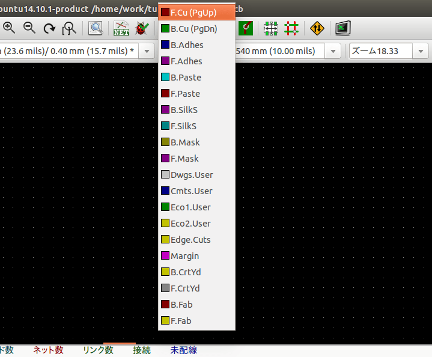 -
例えば 4層PCBで行くと決定したならば、 デザインルール → レイヤのセットアップ を開いて 銅のレイヤ数 を4に変更します。 レイヤ の表ではレイヤに名前を付けられ、それらを何に使うのかを決定することができます。 プリセットレイヤのグループ メニューで、便利なプリセットが選択できることを覚えておきましょう。
-
右ツールバーにある 配線とビアの追加' のアイコン
 をクリックします。 'J1 のピン１をクリックしパッド R2
への配線を引きます。配線の終点を設定するため、ダブルクリックします。この配線の幅はデフォルトで0.250mmです。トップツールバーのドロップダウンメニューから配線幅を変更できます。デフォルトではただ一つの配線幅が利用できることに気付いてください。
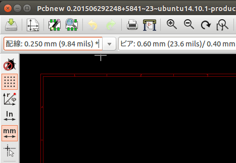
をクリックします。 'J1 のピン１をクリックしパッド R2
への配線を引きます。配線の終点を設定するため、ダブルクリックします。この配線の幅はデフォルトで0.250mmです。トップツールバーのドロップダウンメニューから配線幅を変更できます。デフォルトではただ一つの配線幅が利用できることに気付いてください。
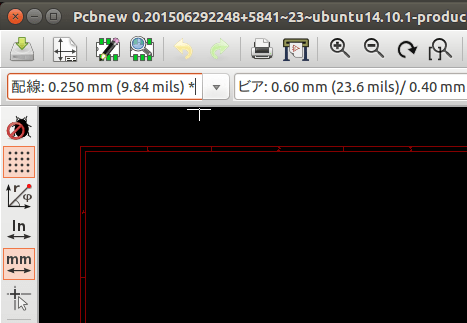 -
もっと配線幅を追加したい場合: デザインルール → デザインルール → グローバルデザインルール タブを表示し、このウィンドウの右下で利用したい配線幅を追加します。これで基板のレイアウトの時にドロップダウンメニューから配線幅を選ぶことができるようになります。以下の例(インチ単位)をご覧下さい。
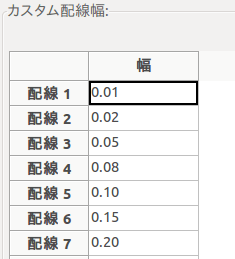 -
あるいは、指定したオプションのセットの中でネットクラスを追加することができます。 デザインルール → デザインルール → ネットクラスエディタ を表示して power という新しいクラスを追加します。配線幅を8ミル(0.0080と表示)から24ミル(0.0240と表示)に変更します。次に power クラスにGND以外の全てを追加します(左で default を選び、右で power を選び、矢印を使います)。
-
グリッドサイズを変更したい場合は 右クリック → グリッドの選択 です。コンポーネントを配置して配線で接続する前か後に、最適なグリッドサイズを選択して下さい。
-
J1のピン3を除く全ての配線が接続されるまで、この作業を繰り返します。あなたの基板は以下の例のようになるでしょう。

-
PCBの他の銅箔面側での配線を行いましょう。トップツールバーにあるドロップダウンメニューで B.Cu("PgDn" キー) を選択します。 '配線とビアの追加' のアイコン
をクリックします。J1のピン3とU1のピン8の間の配線を行います。実際の所、グラウンドプレーンですませるのでこの配線は必要ではありません。配線の色が変わっていることに注意しましょう。
-
レイヤの変更によってピンAからピンBに行きましょう。 ビアを配置することで、配線をしている銅プレーンを変更することが可能です。 上面の銅プレーンに配線している時に、 右クリックして 貫通ビアの配置 を選択するか 単に "v" キーを押します。 これにより配線を終えた所で底面のレイヤに行くことができます。
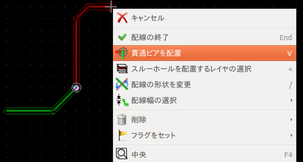 -
特定の接続を検査したい場合には右ツールバーにある ネットをハイライト のアイコン
 をクリックします。J1のピン3をクリックします。配線そのものとそれに接続されている全てのパッドがハイライトされるでしょう。
をクリックします。J1のピン3をクリックします。配線そのものとそれに接続されている全てのパッドがハイライトされるでしょう。
-
全てのGNDピンに接続されるグランドプレーンを作りましょう。右ツールバーにある 塗りつぶしゾーンの追加' のアイコン
 をクリックします。基板の周囲に長方形を描くつもりで、想定するコーナーの１つをクリックします。表示されたダイアログの中で、 'パッド接続 を
サーマルリリーフ に、外枠の角度 を 任意角度 に設定してOKをクリックします。
をクリックします。基板の周囲に長方形を描くつもりで、想定するコーナーの１つをクリックします。表示されたダイアログの中で、 'パッド接続 を
サーマルリリーフ に、外枠の角度 を 任意角度 に設定してOKをクリックします。
-
順番にそれぞれのコーナーでクリックして基板の外形を描きます。ダブルクリックで長方形を完成させます。描いた領域の内側で右クリックします。 全てのゾーンを塗りつぶす をクリックすると、基板は緑色に塗りつぶされ、このように見えるでしょう。

-
トップツールバーにある デザインルールチェックの実行 のアイコン
 をクリックして、デザインルールチェックを実行します。 DRCの起動 をクリックします。 エラーはないはずです。 未結線情報の一覧
をクリックします。未接続はないはずです。OKをクリックしてDRCのウィンドウを閉じます。
をクリックして、デザインルールチェックを実行します。 DRCの起動 をクリックします。 エラーはないはずです。 未結線情報の一覧
をクリックします。未接続はないはずです。OKをクリックしてDRCのウィンドウを閉じます。
-
ファイル → 保存 をクリックしてファイルを保存します。3Dで基板を閲覧するためには 表示 → 3D ビューア をクリックします。

-
PCBの周囲でマウスをドラッグしてPCBを回転させることができます。
-
基板はこれで完成です。メーカーに送るためにはガーバーファイルを生成する必要があります。
4.2. ガーバーファイルの生成
PCBが完成したら、全てのレイヤのガーバーファイルを生成して、基板を製造してくれるあなたのお好みのPCBメーカーに送ることができます。
-
KiCadから Pcbnew ツールを開き、アイコン
 をクリックして基板のファイルを読み込みます。
をクリックして基板のファイルを読み込みます。
-
ファイル → プロット をクリックします。 出力フォーマット として ガーバー を選択し、ガーバーファイルを保存するフォルダを選択します。 製造ファイル出力 ボタンを押して出力します。
-
これらは典型的な2層PCBを製造するために選択する必要があるレイヤです:
| レイヤ | KiCadレイヤ名 | 旧KiCadレイヤ名 | デフォルトの拡張子 | "Protelの拡張子を使用する" がチェックされている時 |
|---|---|---|---|---|
裏面導体レイヤ |
B.Cu |
Copper |
.GBR |
.GBL |
表面導体レイヤ |
F.Cu |
Component |
.GBR |
.GTL |
表面シルクスクリーン |
F.SilkS |
SilkS_Cmp |
.GBR |
.GTO |
裏面ソルダマスク |
B.Mask |
Mask_Cop |
.GBR |
.GBS |
表面ソルダマスク |
F.Mask |
Mask_Cmp |
.GBR |
.GTS |
基板外形 |
Edge.Cuts |
Edges_Pcb |
.GBR |
.GM1 |
4.3. GerbView の使用
-
全てのガーバーファイルを見るためにはKiCadプロジェクト・マネージャ上で GerbView アイコンをクリックします。ドロップダウンメニューで Layer 1 を選択します。 ファイル → ガーバーファイルを読み込む をクリックするか、アイコン
 をクリックします。生成された全てのガーバーファイルを一つずつ読み込みます。それら全てが積み重なって表示されることに注意しましょう。
をクリックします。生成された全てのガーバーファイルを一つずつ読み込みます。それら全てが積み重なって表示されることに注意しましょう。
-
どのレイヤを表示するかの選択/非選択を右側のメニューで行います。メーカーに送る前に注意深く全てのレイヤを検査しましょう。
-
ドリルファイルを生成するには、 Pcbnew から ファイル → プロット を再び行います。デフォルトの設定でよいでしょう。
4.4. Freerouterによる自動配線
基板の手配線は手早くて楽しいですが、大量のコンポーネントを含む基板の場合には自動配線を使いたくなるかもしれません。最初に重要な配線を手で行ってから、退屈な仕事をさせるために自動配線をセットするということを覚えておきましょう。その仕事は未配線についてのみ応えてくれます。ここで私達が使う自動配線は freerouting.net のFreerouterです。
|
注
|
Freerouter はオープンソースの java アプリケーションで、KiCadと使うためには自分でビルドする必要があります。Freerouter のソースコードはこのサイトにあります: https://github.com/nikropht/FreeRouting |
-
Pcbnew から ファイル → エクスポート → Specctra DSNファイル をクリックするか、ツール → FreeRoute → 現在のボードを”Specctra DSN”ファイルへエクスポート をクリックするかしてローカルにファイルを保存します。 Freerouter を起動して Open Your Own Design ボタンをクリックし、 dsn ファイルを選んで読み込ませます。
注ツール → FreeRoute ウィンドウには素晴らしいヘルプボタンがあり、ファイルビューアで Freerouter Guidelines という小さなドキュメントを開いてくれます。 Freerouter を効果的に使うためにこのガイドラインに従いましょう。 -
Freerouterは、手配線と自動配線の両方で、KiCadが現時点で持っていない特徴を持っています。Freerouterは2つの主要なステップで操作します: 最初に基板に配線を行い、次にそれを最適化します。完全最適化には時間がかかるかもしれませんが、いつでも必要なら停止することができます。
-
トップバーにある Autorouter ボタンをクリックすることで自動配線を開始できます。下部のバーは実行中の配線作業の情報を知らせてくれます。もしも Pass カウントが30以上になったら、あなたの基板はおそらくこのルーターでは自動配線できないでしょう。コンポーネント間隔をもっと広げたり良い向きに回転させてから再挑戦しましょう。部品の回転と位置決めのゴールは、ラッツネストの空中交差の数を少なくすることです。
-
マウスの左クリックにより、自動配線を停止して最適化プロセスを自動的に開始させることができます。もう一度左クリックすると、最適化プロセスが停止します。停止する必要がないのであれば、Freerouterが仕事を終えるのに任せるのが良いでしょう。
-
File → Export Specctra Session File メニューをクリックして基板ファイルを .ses 拡張子で保存します。Freerouter ルールファイルは保存する必要がありません。
-
Pcbnew に戻りましょう。ツール → FreeRoute をクリックし、 スペクトラ・セッション ファイル (.ses) のバックインポート ボタンをクリックして .ses ファイルを選択し、新たに配線された基板をインポートします。
もし気に入らない配線があれば、配線を削除して再配線できます。"Delete" キーと、右ツールバーにある '配線とビアの追加' のアイコン
 の配線ツールを使いましょう。
の配線ツールを使いましょう。
5. KiCadの前方向アノテーション
電子回路図、フットプリントの割り当て、基板レイアウト、ガーバーファイルの生成を完了したら、基板を現実のものとするために、PCBメーカーに全てを送る準備ができました。
しばしば、この線形の作業の流れは一方向ではなくなります。例えば、既にこの作業の流れを完了していたはずの基板を変更/拡張しなければならない時ですが、あなたは、部品を動かしたり、他のものと入れ替えたり、部品を変更したり、等々する必要が起こりえます。この変更の作業の中で、あなたがやりたくないことは基板全体を一から配線し直すことでしょう。代わりにこのようにすべきです:
-
仮想的なコネクタのCON1をCON2と入れ替えたいと想定しましょう。
-
あなたは既に完成した回路図と配線を終えたPCBを持っています。
-
KiCadから Eeschema を起動して、CON1を削除しCON2を追加して変更を行います。アイコン
で回路図プロジェクトを保存して、トップツールバーにある
ネットリストの生成 のアイコン
をクリックします。
-
ネットリスト をクリックし 保存 します。デフォルトのファイル名で保存しましょう。古いファイルを上書きします。
-
CON2にフットプリントを割り当てます。トップツールバーにある CvPcb(コンポーネントとフットプリントの関連付け)を実行 のアイコン
をクリックします。新しいデバイスのCON2にフットプリントを割り当てます。残りのコンポーネントは以前に割り当てたフットプリントのままです。
CvPcb を閉じます。
-
Eeschema に戻り、 ファイル → 回路図プロジェクトの保存 をクリックしてプロジェクトを保存します。 Eeschema を閉じます。
-
KiCadプロジェクト・マネージャから Pcbnew のアイコンをクリックします。 Pcbnew のウィンドウが開きます。
-
古い、配線済みの基板が自動的に開きます。新しいネットリストファイルをインポートしましょう。トップツールバーにある ネットリストの読込み のアイコン をクリックします。
-
ネットリストファイルを参照する ボタンをクリックして、ネットリストファイルを選択し、 現在のネットリストを読み込む をクリックします。そして 閉じる ボタンをクリックします。
-
この時点で、以前の全ての部品が配線済みのレイアウトが見られます。左上の隅に全ての未配線の部品、今回の例ではCON2が見えるでしょう。マウスでCON2を選択します。基板の中央まで移動しましょう。
-
CON2を配置して配線します。完了したらいつものように保存してガーバーファイルの生成をしましょう。
ここに書いた手順は必要に応じて何度でも容易に繰り返すことが可能です。上述した前方向アノテーションとは別に、後方向アノテーションとして知られる別の方法があります。この方法はPcbnewで配線済みにした基盤の変更を、回路図とネットリストに反映することを可能にします。が、後方向アノテーションはそんなに便利ではないのでここでは書きません。
6. KiCad回路図コンポーネントの作成
あなたが回路図に配置したいコンポーネントがKiCadのライブラリの中にないことがあります。これは当たり前のことで嘆くことではありません。この章では、新しい回路図コンポーネントがKiCadでいかに素早く作れるのかを見ていきましょう。しかし、KiCadコンポーネントはいつでもインターネット上で見つけられることも覚えておきましょう。例えば、ここからです:
KiCadでは、コンポーネントは DEF で始まり ENDDEF で終わるテキストの断片です。普通は一つ以上のコンポーネントが拡張子 .lib のライブラリファイルに含まれています。コンポーネントをライブラリファイルに追加したいなら、あなたはただカット＆ペーストを使えばよいのです。
6.1. コンポーネント・ライブラリ・エディタの使用
-
新しいコンポーネントの作成には コンポーネント・ライブラリ・エディタ (Eeschema の一部) を使います。プロジェクトフォルダ tutorial1 内に library というフォルダを作りましょう。新コンポーネントを作ったら、そこに新しいライブラリファイル myLib.lib を置きます。
-
さあ新しいコンポーネントの作成を始めましょう。KiCadから Eeschema を起動して、コンポーネント・ライブラリ・エディタ のアイコン
 をクリックし、新規コンポーネント作成 のアイコン
をクリックし、新規コンポーネント作成 のアイコン
 をクリックします。コンポーネント・プロパティのウィンドウが現れます。新しいコンポーネントを MYCONN3 と名付け、デフォルトの参照記号 を
J に、パッケージ内のユニット数 を 1 に設定します。OKをクリックします。警告が出たらyesをクリックしておきます。
この時点ではコンポーネントは、そのラベルだけで構成されています。ピンをいくつか足してみましょう。右ツールバーにある コンポーネントにピンを追加'
のアイコン
をクリックします。コンポーネント・プロパティのウィンドウが現れます。新しいコンポーネントを MYCONN3 と名付け、デフォルトの参照記号 を
J に、パッケージ内のユニット数 を 1 に設定します。OKをクリックします。警告が出たらyesをクリックしておきます。
この時点ではコンポーネントは、そのラベルだけで構成されています。ピンをいくつか足してみましょう。右ツールバーにある コンポーネントにピンを追加'
のアイコン
 をクリックします。ピンを配置するには、シートの 'MYCONN3
ラベルの下あたりを左クリックします。
をクリックします。ピンを配置するには、シートの 'MYCONN3
ラベルの下あたりを左クリックします。
-
現れた ピンのプロパティ ウィンドウで、ピン名を VCC 、ピン番号を 1 、エレクトリックタイプ を パッシブ と設定してOKをクリックします。
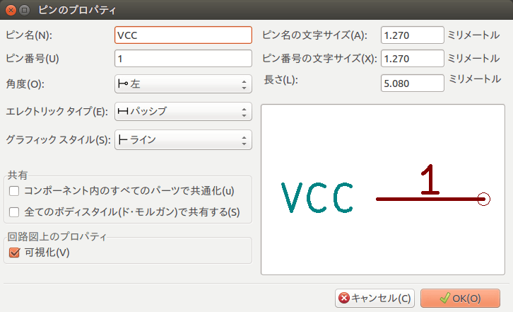 -
適当な場所、 MYCONN3 ラベルの右下あたり、をクリックしてピンを配置します。
-
ピン配置のステップを繰り返します。今度は ピン名 は INPUT で、 ピン番号 は 2 で、 エレクトリックタイプ は パッシブ とします。
-
ピン配置のステップを繰り返します。今度は ピン名 は GND で、 ピン番号 は 3 で、 エレクトリックタイプ は パッシブ とします。ピンを順に重ねて配置します。コンポーネントのラベルの MYCONN3 をページの中心(青いラインが交差する所)にします。
-
次にコンポーネントの輪郭を描きましょう。 コンポーネントのボディに矩形を入力 のアイコン
 をクリックします。以下に示すようにピンに隣接して長方形を描きます。まず、長方形の左上の角にしたい所をクリックします（マウスボタンを押したままにしません）。そして、長方形の右下の角にしたい所をクリックします。
をクリックします。以下に示すようにピンに隣接して長方形を描きます。まず、長方形の左上の角にしたい所をクリックします（マウスボタンを押したままにしません）。そして、長方形の右下の角にしたい所をクリックします。

-
矩形を黄色で塗りつぶしたい場合、まず 設定 → 色の設定 で "ボディ背景色" を "Yellow 4" に設定します。そして、編集画面上で塗りつぶしたい矩形の枠上にマウスカーソルを置いて "e" キーを押して 図形のプロパティ ウィンドウを表示し、 背景色で塗りつぶし を選択します。
-
コンポーネントをあなたのライブラリ myLib.lib に保存しましょう。 新しいライブラリへ現在のコンポーネントを保存 のアイコン
 をクリックして、フォルダ
tutorial1/library/ を選び、新しいライブラリファイルを myLib.lib という名前で保存します。
をクリックして、フォルダ
tutorial1/library/ を選び、新しいライブラリファイルを myLib.lib という名前で保存します。
-
設定 → コンポーネントライブラリ で、 tutorial1/library/ を ユーザ定義の検索パス に追加し、 myLib.lib を コンポーネントライブラリファイル に追加します。
-
作業ライブラリの選択 のアイコン
 をクリックします。ライブラリの選択ウィンドウ内で myLib
を選択してOKをクリックします。ウィンドウの上部が現在使用中のライブラリを示しており、それが myLib であることに注意しましょう。
をクリックします。ライブラリの選択ウィンドウ内で myLib
を選択してOKをクリックします。ウィンドウの上部が現在使用中のライブラリを示しており、それが myLib であることに注意しましょう。
-
トップツールバーにある 現在のライブラリ内の現在のコンポーネントを更新 のアイコン をクリックします。トップツールバーにある ディスクに現在のライブラリを保存 のアイコン
 をクリックして変更を全て保存します。どの確認メッセージにも はい
をクリックして下さい。新しい回路図コンポーネントは完成して、ウィンドウのタイトルバーに示されているライブラリから使えます。
をクリックして変更を全て保存します。どの確認メッセージにも はい
をクリックして下さい。新しい回路図コンポーネントは完成して、ウィンドウのタイトルバーに示されているライブラリから使えます。
-
コンポーネント・ライブラリ・エディタのウィンドウを閉じます。 Eeschema のウィンドウに戻ります。あなたの新しいコンポーネントはライブラリ myLib から利用できます。
-
ライブラリパスに追加することによって、ライブラリの file.lib ファイルを利用できるようになります。 Eeschema から 設定 → コンポーネントライブラリ として、それへのパスを ユーザ定義の検索パス に追加し、 file.lib を コンポーネントライブラリファイル に追加します。
6.2. コンポーネントのエクスポート、インポート、変更
一からコンポーネントを作るよりも、既に作られたものから始めてそれを変更する方が簡単なこともあります。この章では、KiCadの標準ライブラリ device から、あなた独自のライブラリ myOwnLib.lib にコンポーネントをエクスポートして、それを変更する方法を見ていきましょう。
-
KiCadから Eeschema を起動して、 コンポーネント・ライブラリ・エディタ のアイコン
をクリックして、 作業ライブラリの選択 のアイコン
をクリックし、 device ライブラリを選びます。
現在のライブラリからエディタへコンポーネントを読み込む のアイコン
をクリックして
RELAY_2RT をインポートします。
-
コンポーネントのエクスポート のアイコン
 をクリックして、フォルダ library/ へ行き、新しいライブラリファイルを myOwnLib.lib という名前で保存します。
をクリックして、フォルダ library/ へ行き、新しいライブラリファイルを myOwnLib.lib という名前で保存します。
-
ライブラリパスに追加することで、このコンポーネントとライブラリ全体 myOwnLib.lib が利用できるようになります。 Eeschema から 設定 → コンポーネントライブラリ として、 library/ を ユーザ定義の検索パス に追加し、 myOwnLib.lib を コンポーネントライブラリファイル に追加します。追加したら "OK" ボタンを押してウィンドウを閉じます。
-
作業ライブラリの選択 のアイコン
をクリックします。ライブラリの選択ウィンドウ内で myOwnLib
を選択してOKをクリックします。ウィンドウの上部が現在使用中のライブラリを示しており、それが myOwnLib であることに注意しましょう。
-
現在のライブラリからエディタへコンポーネントを読み込む のアイコン をクリックして RELAY_2RT をインポートします。
-
これでコンポーネントを好きなように変更できます。マウスカーソルをラベル RELAY_2RT に重ねて "e" キーを押して MY_RELAY_2RT にリネームします。
-
トップツールバーにある 現在のライブラリ内の現在のコンポーネントを更新 のアイコン をクリックします。トップツールバーにある ディスクに現在のライブラリを保存 のアイコン
をクリックして変更を全て保存します。
6.3. quicklibによる回路図コンポーネントの作成
この章では、インターネットのツール quicklib を使った、回路図コンポーネント MYCONN3 (前の 「MYCONN3」 参照) の別の作成方法を紹介します。
-
quicklib のウェブページに行きましょう: http://kicad.rohrbacher.net/quicklib.php
-
ページに次の情報を入力しましょう: Component name: MYCONN3、 Reference Prefix: J、 Pin Layout Style: SIL、 Pin Count, N: 3
-
Assign Pins をクリックします。ページに次の情報を入力しましょう: Pin 1: VCC、 Pin 2: input、 Pin 3: GND 。Type は3つのピンとも Passive を選択します。
-
Preview をクリックします。満足なら Build Library Component をクリックします。 ファイルをダウンロードして tutorial1/library/myQuickLib.lib と名付けます。できました！
-
それをKiCadを使って見てみましょう。KiCadプロジェクト・マネージャから Eeschema を起動して、 コンポーネント・ライブラリ・エディタ のアイコン
をクリックし、 コンポーネントのインポート のアイコン
 をクリックし、 tutorial1/library/ へ行き myQuickLib.lib を選択します。
をクリックし、 tutorial1/library/ へ行き myQuickLib.lib を選択します。

-
ライブラリパスに追加することで、このコンポーネントとライブラリ全体 myQuickLib.lib が利用できるようになります。 Eeschema から 設定 → コンポーネントライブラリ として、 library/ を ユーザ定義の検索パス に追加し、 myQuickLib.lib を コンポーネントライブラリファイル に追加します。
このコンポーネント作成方法は、たくさんのピンを持つコンポーネントを作りたい時に非常に効果的であると想像できるでしょう。
6.4. 大量ピンの回路図コンポーネントの作成
quicklibによる回路図コンポーネントの作成 の章で、ウェブベースのツール quicklib を使った回路図コンポーネントの作成方法を見ました。しかし、時に、大量ピン(数百のピン)を持つ回路図コンポーネントを作る必要があることに気付くでしょう。KiCadでは、これはそんなにややこしい仕事ではありません。
-
50ピンのデバイスのための回路図コンポーネントを作成したいとします。複数の少量ピンの図形、例えば25ピンの図形を2つ、を使ってそれを描くのが一般的な方法です。このコンポーネント表現はピン接続が容易でしょう。
-
このコンポーネントを作成する最良の方法は、quicklib を使って別々に25ピンのコンポーネントを生成して、Pythonスクリプトでそれらのピン番号を振り直し、最終的に2つを統合して一組のDEFとENDDEFの中にコピー＆ペーストすることです。
-
以下に in.txt ファイルと out.txt ファイルと連動して使えるシンプルなPythonスクリプトの例を示します。これは in.txt ファイルの中の全ての行に対して、 X PIN1 1 -750 600 300 R 50 50 1 1 I を X PIN26 26 -750 600 300 R 50 50 1 1 I のように数字の振り替えをします。
#!/usr/bin/env python ''' simple script to manipulate KiCad component pins numbering''' import sys, re try: fin=open(sys.argv[1],'r') fout=open(sys.argv[2],'w') except: print "oh, wrong use of this app, try:", sys.argv[0], "in.txt out.txt" sys.exit() for ln in fin.readlines(): obj=re.search("(X PIN)(\d*)(\s)(\d*)(\s.*)",ln) if obj: num = int(obj.group(2))+25 ln=obj.group(1) + str(num) + obj.group(3) + str(num) + obj.group(5) +'\n' fout.write(ln) fin.close(); fout.close() # # for more info about regular expression syntax and KiCad component generation: # http://gskinner.com/RegExr/ # http://kicad.rohrbacher.net/quicklib.php
-
2つのコンポーネントを一つに統合するために、 Eeschema からコンポーネント・ライブラリ・エディタを使って、1番目のコンポーネントを移動し、2番目に重ならないようにしてやる必要があるでしょう。以下に最終的な .lib ファイルとその Eeschema での表現を示します。
Eeschema-LIBRARY Version 2.3 #encoding utf-8 # COMP DEF COMP U 0 40 Y Y 1 F N F0 "U" -1800 -100 50 H V C CNN F1 "COMP" -1800 100 50 H V C CNN DRAW S -2250 -800 -1350 800 0 0 0 N S -450 -800 450 800 0 0 0 N X PIN1 1 -2550 600 300 R 50 50 1 1 I ... X PIN49 49 750 -500 300 L 50 50 1 1 I ENDDRAW ENDDEF #End Library
-
ここで紹介しているPythonスクリプトは、ピン番号とピンラベルを操作するとても強力なツールです。その威力は、難解ではありますが驚くほどに便利な正規表現構文による、ということを覚えておいて下さい: http://gskinner.com/RegExr/
7. フットプリントの作成
他の、一種類のライブラリに回路図記号とフットプリントの両方を含むEDAソフトウェア・ツールと異なり、KiCadの .lib ファイルはコンポーネントを、 .kicad_mod ファイルはフットプリントを含んでいます。 CvPcb はコンポーネントにフットプリントを割り当てるのに使われます。
.lib と同様に、 .kicad_mod ファイルはテキストファイルで、一つのフットプリントを含むことができます。
KiCadには豊富なフットプリントのライブラリがありますが、あなたが必要とするフットプリントがKiCadのライブラリ内にないこともあるでしょう。ここではKiCadで新しいPCBフットプリントを作成する手順を示します:
7.1. フットプリント・エディタの使用
-
KiCadプロジェクト・マネージャから Pcbnew ツールを起動します。トップツールバーにある フットプリント エディタを開く のアイコン
 をクリックします。 フットプリント・エディタ
が開きます。
をクリックします。 フットプリント・エディタ
が開きます。
-
新しいフットプリント MYCONN3 を新しいフットプリントライブラリ myfootprint に保存します。プロジェクトのフォルダ tutorial1/ 内に新しく myfootprint.pretty/ フォルダを作成して下さい。 設定 → フットプリント ライブラリの管理 をクリックして ライブラリの追加' ボタンを押します。テーブルに次のように入力します。別名（ニックネーム）には "myfootprint" 、ライブラリのパスには "${KIPRJMOD}/myfootprint.pretty" 、プラグインの種類には "KiCad"。入力したらOKを押して、PCBライブラリ一覧のダイアログを閉じます。トップツールバーにある 'アクティブなライブラリを選択 のアイコン
をクリックします。そして myfootprint
ライブラリを選択しましょう。
-
トップツールバーにある 新規フットプリント のアイコン
 をクリックします。 フットプリント名
に MYCONN3 を入力します。画面中央に MYCONN3 ラベルが表示されます。そのラベルの下に REF* があります。
MYCONN3 の上で右クリックし、 REF の上方に移動します。 REF* 上で右クリックして、 テキストの編集 を選び、
SMD にリネームします。テキストプロパティの 表示 の項目で 非表示 を選択します。
をクリックします。 フットプリント名
に MYCONN3 を入力します。画面中央に MYCONN3 ラベルが表示されます。そのラベルの下に REF* があります。
MYCONN3 の上で右クリックし、 REF の上方に移動します。 REF* 上で右クリックして、 テキストの編集 を選び、
SMD にリネームします。テキストプロパティの 表示 の項目で 非表示 を選択します。
-
右ツールバーにある パッド入力 のアイコン
 を選択します。パッドを配置するため画面をクリックします。新しいパッド上で右クリックし パッドの編集 をクリックします。代わりに "e"
キーのショートカットも使えます。
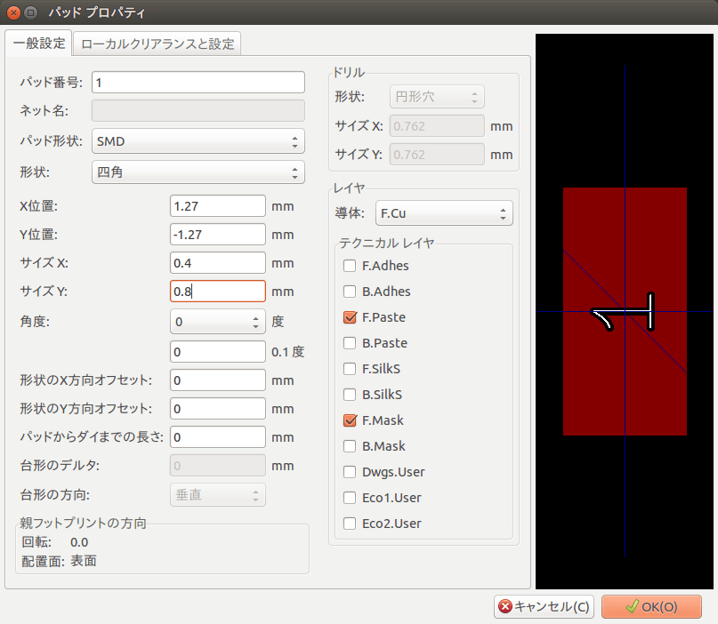
を選択します。パッドを配置するため画面をクリックします。新しいパッド上で右クリックし パッドの編集 をクリックします。代わりに "e"
キーのショートカットも使えます。
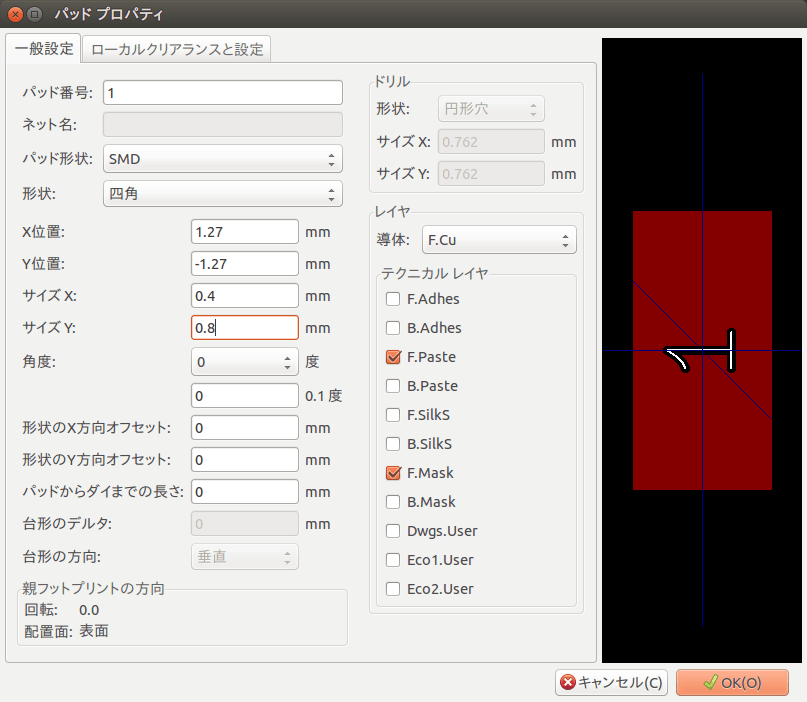 -
パッド番号 を 1 に、 形状 を 四角 に、 パッド形状 を SMD に、 サイズX を 0.4 に、 サイズY を 0.8 に設定し、OKをクリックします。再度 パッド入力 をクリックし、 もう2つパッドを配置します。
-
グリッドサイズを変更したいなら 右クリック → グリッドの選択 とします。配置する前に適切なグリッドサイズを選択しましょう。
-
上の図のように MYCONN3 と SMD のラベルを外側に移動します。
-
パッドを配置する時には、相対的な距離を測る必要があります。相対座標軸の (0,0) としたい所にカーソルを置き、スペースキーを押します。カーソルを動かすと、カーソル位置の相対的な指標がウィンドウの下方に見えるでしょう。新しい原点を設定するにはスペースキーを押しましょう。
-
フットプリントの輪郭を加えましょう。右ツールバーにある 図形ライン（またはポリゴン）を入力 のボタン
 をクリックします。パーツの周囲にコネクタの外形を描きます。
をクリックします。パーツの周囲にコネクタの外形を描きます。
-
トップツールバーにある アクティブなライブラリへフットプリントを保存 のアイコン
をクリックし、デフォルト名のMYCONN3で保存します。
8. KiCadプロジェクトファイルの可搬性について
あなたのKiCadプロジェクトを、他の人が完全に取り込んで使えるために、どのファイルを送る必要があるでしょうか？
誰かとKiCadのプロジェクトを共有する時、回路図ファイル .sch 、基板ファイル .kicad_pcb 、プロジェクトファイル .pro 、ネットリストファイル .net を、コンポーネントライブラリファイル .lib 及びフットプリントライブラリファイル .kicad_mod と一緒に送ることが重要です。この方法でのみ完全に自由に回路図と基板を変更することができます。
KiCadの回路図では、回路図記号を含む .lib ファイルが必要です。それらのライブラリファイルは Eeschema の設定で読み込まれる必要があります。一方、基板( .kicad_pcb ファイル)では、フットプリントは .kicad_pcb ファイルの中に保存させることができます。誰かに .kicad_pcb ファイルだけを送っても、彼はその基板を見たり編集したりできるわけです。しかし、もし彼がネットリストからコンポーネントを読み込みたいのであれば、フットプリントライブラリ (.kicad_mod ファイル) が存在し、回路図の場合と同様に、 Pcbnew の設定で読み込まれている必要があります。同様に、 CvPcb でモジュールが表示されるようにするためには、 Pcbnew の設定で .kicad_mod ファイルが読み込まれていることが必要です。
もし誰かが フットプリント付きの .kicad_pcb ファイルを送ってくれたら、あなたはそれを他の基板でも利用したいでしょう。フットプリント・エディタを開き、現在の基板からフットプリントを読み込み、保存するか別のフットプリント・ライブラリ・ファイルにエクスポートします。 .kicad_pcb ファイルから全てのフットプリントを一度にエクスポートすることもできます。 Pcbnew → ファイル → フットプリントのアーカイブ → フットプリントアーカイブの作成 で、基板上の全てのフットプリントの .kicad_mod ファイルが生成されます。
結論として、PCBだけを配布したいのなら、基板ファイル .kicad_pcb だけで十分です。しかし、あなたが他の人に、回路図と部品と基板の、利用と変更の完全な自由を与えたいのならば、以下のプロジェクトディレクトリをzipして送ることをお勧めいたします。
tutorial1/
|-- tutorial1.pro
|-- tutorial1.sch
|-- tutorial1.kicad_pcb
|-- tutorial1.net
|-- library/
| |-- myLib.lib
| |-- myOwnLib.lib
| \-- myQuickLib.lib
|
|-- myfootprint.pretty/
| \-- MYCONN3.kicad_mod
|
\-- gerber/
|-- ...
\-- ...
9. KiCadドキュメントの詳細
この文書はKiCadの大部分の機能のクイックガイドでした。より詳細な手順については、それぞれのKiCadツールから参照できるヘルプファイルを参照して下さい。 ヘルプ → マニュアル をクリックです。
KiCadには、その4つのソフトウェアコンポーネント全てに、とても良い多言語のマニュアルが付いてきます。
全KiCadマニュアルの英語版はKiCadと一緒に配布されます。
マニュアルに加えて、KiCadはこの、他の言語にも翻訳されたチュートリアルと一緒に配布されます。このチュートリアルは無料で最新版のKiCadと共に配布されます。このチュートリアルとマニュアルはご利用のKiCadと共にパッケージされています。
Linux の場合、ディストリビューションにもよりますが、一般的に次のディレクトリでしょう:
/usr/share/doc/kicad/help/en/ /usr/local/share/doc/kicad/help/en
Windows の場合:
<installation directory>/share/doc/kicad/help/en
OS X の場合:
/Library/Application Support/kicad/help/en
9.1. Web上のKiCadドキュメント
最新のKiCadのドキュメンテーションは、複数の言語に翻訳されてWeb上にあります。